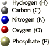

The Biology Project > Cell Biology > Cell Membranes > Problem Set
Cell Membranes Problem Set
Problem 1: Membrane components
Tutorial to help answer the question
The ____ portion of the cell membrane functions as a barrier while the ____ portion determines specific functions, including pumps, receptors, adhesion, etc.
A. carbohydrate, nucleic acid
B. lipid, protein
C. lipid, carbohydrate
D. nucleic acid, lipid
Tutorial
Graphic of Fluid Mosaic Model for Cell Membrane
Lipids
|
Areas of the molecule enriched for "C" and "H" are hydrophobic. |
 Fatty acids tails are composed of carbon and hydrogen and are hydrophobic.
|
Phospholipids are amphipathic, and have hydrophilic and hydrophobic character in the same molecule. Interactions with water cause the phospholipids to form a bilayer, with hydrophobic fatty acid tails inside the bilayer and hydrophilic groups exposed to water. This basic structure makes the membrane a barrier to hydrophilic molecules. The interior of the membrane is fluid, with a viscosity about equal to olive oil. Cholesterol in membranes alters fluidity. |

Proteins of membranes are divided into two general classes:
 |
|
Transport of polar molecules through the cell membrane usually requires channels made up of proteins that span the lipid bilayer. Thus, we associate the majority of functional properties of cell membranes with the membrane proteins. The lipid is predominately a barrier. Later we shall see that both lipids and proteins of membranes can function in cell signaling.
The Biology Project > Cell Biology > Cell Membranes > Problem Set
Department of Biochemistry and Molecular Biophysics
University of Arizona
May 2002
Revised: August 2004
Contact the Development Team
http://biology.arizona.edu
All contents copyright © 2002-04. All rights reserved.